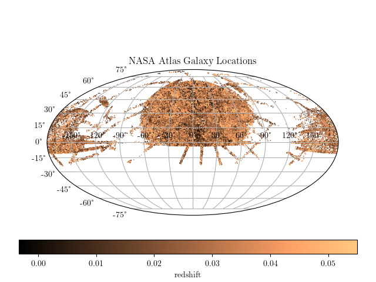
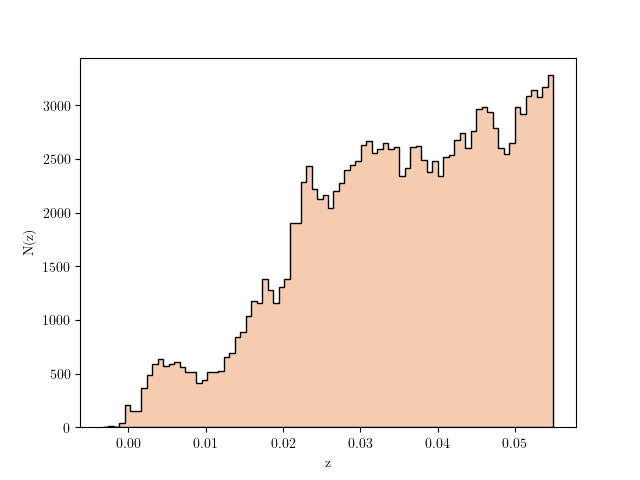
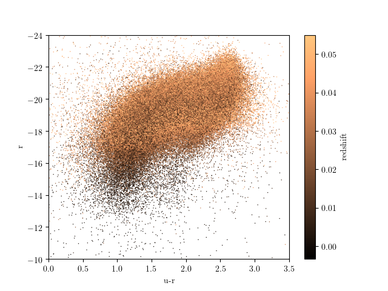

NASA Sloan Atlas¶
This shows some visualizations of the data from the NASA SDSS Atlas
  {kind=link}
{kind=link}
{kind=link}
downloading NASA atlas data from http://www.astro.washington.edu/users/ivezic/DMbook/nsa_v0_1_2_reduced.npy to /home/vanderplas/astroML_data
Downloading http://www.astro.washington.edu/users/ivezic/DMbook/nsa_v0_1_2_reduced.npy
[= ] 1.18Mb / 47.07Mb
[== ] 2.35Mb / 47.07Mb
[=== ] 3.53Mb / 47.07Mb
[==== ] 4.71Mb / 47.07Mb
[===== ] 5.88Mb / 47.07Mb
[====== ] 7.06Mb / 47.07Mb
[======= ] 8.24Mb / 47.07Mb
[======== ] 9.41Mb / 47.07Mb
[========= ] 10.59Mb / 47.07Mb
[========== ] 11.77Mb / 47.07Mb
[=========== ] 12.94Mb / 47.07Mb
[============ ] 14.12Mb / 47.07Mb
[============= ] 15.30Mb / 47.07Mb
[============== ] 16.47Mb / 47.07Mb
[=============== ] 17.65Mb / 47.07Mb
[================ ] 18.83Mb / 47.07Mb
[================= ] 20.00Mb / 47.07Mb
[================== ] 21.18Mb / 47.07Mb
[=================== ] 22.36Mb / 47.07Mb
[==================== ] 23.53Mb / 47.07Mb
[===================== ] 24.71Mb / 47.07Mb
[====================== ] 25.89Mb / 47.07Mb
[======================= ] 27.06Mb / 47.07Mb
[======================== ] 28.24Mb / 47.07Mb
[========================= ] 29.42Mb / 47.07Mb
[========================== ] 30.59Mb / 47.07Mb
[=========================== ] 31.77Mb / 47.07Mb
[============================ ] 32.95Mb / 47.07Mb
[============================= ] 34.12Mb / 47.07Mb
[============================== ] 35.30Mb / 47.07Mb
[=============================== ] 36.48Mb / 47.07Mb
[================================ ] 37.65Mb / 47.07Mb
[================================= ] 38.83Mb / 47.07Mb
[================================== ] 40.01Mb / 47.07Mb
[=================================== ] 41.18Mb / 47.07Mb
[==================================== ] 42.36Mb / 47.07Mb
[===================================== ] 43.54Mb / 47.07Mb
[====================================== ] 44.71Mb / 47.07Mb
[=======================================] 45.89Mb / 47.07Mb
[========================================] 47.07Mb / 47.07Mb
[=========================================] 47.07Mb / 47.07Mb
Optimization terminated successfully.
Current function value: -30227.574882
Iterations: 18
Function evaluations: 50
# Author: Jake VanderPlas <vanderplas@astro.washington.edu>
# License: BSD
# The figure is an example from astroML: see http://astroML.github.com
import numpy as np
from matplotlib import pyplot as plt
from astroML.datasets import fetch_nasa_atlas
data = fetch_nasa_atlas()
#------------------------------------------------------------
# plot the RA/DEC in an area-preserving projection
RA = data['RA']
DEC = data['DEC']
# convert coordinates to degrees
RA -= 180
RA *= np.pi / 180
DEC *= np.pi / 180
ax = plt.axes(projection='mollweide')
plt.scatter(RA, DEC, s=1, lw=0, c=data['Z'], cmap=plt.cm.copper)
plt.grid(True)
plt.title('NASA Atlas Galaxy Locations')
cb = plt.colorbar(cax=plt.axes([0.05, 0.1, 0.9, 0.05]),
orientation='horizontal',
ticks=np.linspace(0, 0.05, 6))
cb.set_label('redshift')
#------------------------------------------------------------
# plot the r vs u-r color-magnitude diagram
absmag = data['ABSMAG']
u = absmag[:, 2]
r = absmag[:, 4]
plt.figure()
ax = plt.axes()
plt.scatter(u - r, r, s=1, lw=0, c=data['Z'], cmap=plt.cm.copper)
plt.colorbar(ticks=np.linspace(0, 0.05, 6)).set_label('redshift')
plt.xlim(0, 3.5)
plt.ylim(-10, -24)
plt.xlabel('u-r')
plt.ylabel('r')
#------------------------------------------------------------
# plot a histogram of the redshift
from astroML.plotting import hist
plt.figure()
hist(data['Z'], bins='knuth',
histtype='stepfilled', ec='k', fc='#F5CCB0')
plt.xlabel('z')
plt.ylabel('N(z)')
plt.show()